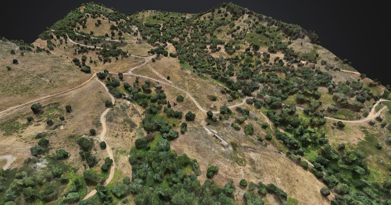
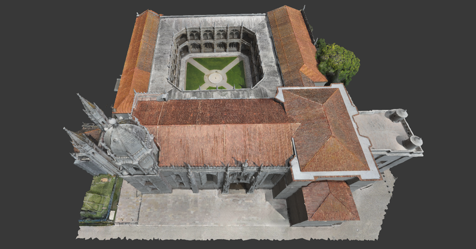
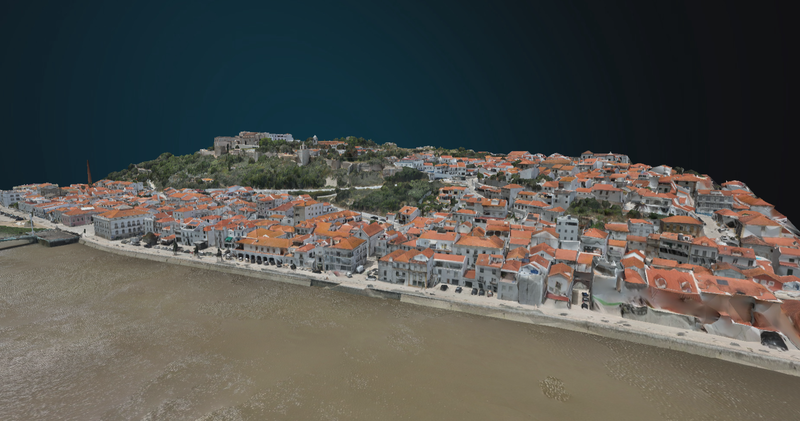
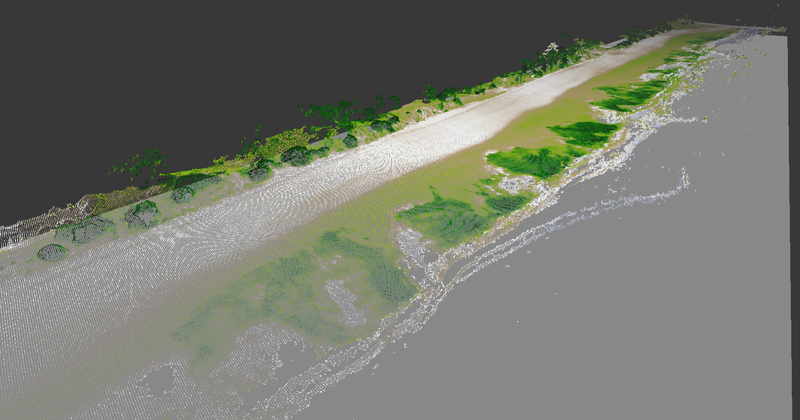

Caracterizar materiais
Observação geológica, dados geoquímicos e resposta espectral para reconhecer materiais e compreender a sua distribuição.
GEO-DS / Investigação
Geologia, geoquímica e informação espacial para estudar recursos naturais, ambientes e património.
02 / INVESTIGAÇÃO E APLICAÇÕES
Diferentes lugares, perguntas e escalas. A mesma atenção à qualidade da informação e à sua interpretação.

01Geologia, geoquímica, cartografia e modelos geoambientais aplicados à caracterização de recursos e de áreas mineiras.
Antiga Mina do RosalgarExplorar exemplo
02Documentação tridimensional de edifícios, sítios arqueológicos e espaços de acesso condicionado.
Mosteiro dos JerónimosExplorar exemplo
03Levantamentos urbanos, modelos digitais de terreno e integração de informação em sistemas de informação geográfica.
Alcácer do SalExplorar exemplo
04Imagem multiespectral e representação do território para explorar a vegetação, a paisagem e ambientes costeiros.
Pradaria de TróiaExplorar exemploMétodos complementares, escolhidos em função do problema.
Observação geológica, dados geoquímicos e resposta espectral para reconhecer materiais e compreender a sua distribuição.
Levantamentos de terreno, estruturas e espaços construídos, com integração de nuvens de pontos e modelos digitais.
Articulação entre observações locais, cartografia e deteção remota para interpretar padrões e definir novas perguntas.
Preparação de mapas, visualizações, relatórios e artigos que tornam os métodos e os resultados consultáveis.
Exemplos que ligam dados, materiais e paisagem.
Em áreas mineiras, a integração de observação geológica, espectroscopia e geoquímica permite estudar a distribuição de materiais e elementos. O trabalho em Trimpancho é um exemplo desta abordagem e tem resultados publicados.
Em sítios arqueológicos e edifícios, o registo tridimensional apoia a documentação de formas, relações espaciais e superfícies. O atlas permite explorar exemplos de diferentes lugares e técnicas de aquisição.
VAMOS COLABORAR
Conversa com a equipa para enquadrar uma investigação, uma colaboração ou um levantamento especializado.